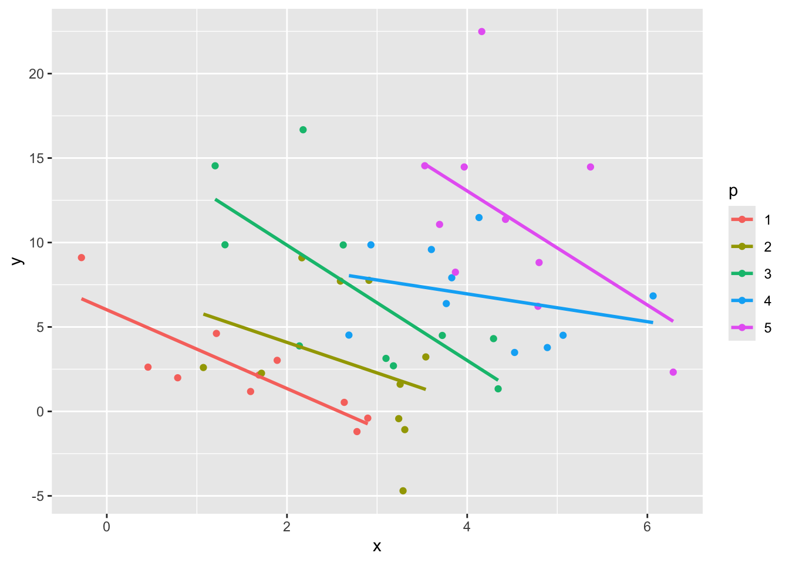

In a multilevel model (where data is clustered within groups), the total effect of a (lower level) predictor can be separated into the within-group component and the between-group component. Entering raw predictor values or grand-mean centered values into the model will produce a weighted* composite of both components (and interpretation will be confounded).
However, if the group mean values of the predictor are also entered in the model then the raw predictor coefficient represents the within-group effect (and the mean predictor coefficient would represent the difference between the between- and within-group effect - the contextual effect).
If the group mean centered values are entered as the predictor (with or without a group mean predictor), the regression coefficient represents the within-group effect.
Adding the group mean values as a predictor will then estimate the between-group effect.
This post is based on this stackexchange post
set.seed(4) # 3 works
beta = -1
sigma = 5
ngp = 5
rpt = 10
generatedata = function(gp, n){
x = rnorm(n) + gp
y = beta*x + 3*gp + rnorm(n, sd=sigma)
tibble(x=x, y=y, p=gp)
}
data <- map(1:5, generatedata, rpt) |>
bind_rows() |>
mutate(p = factor(p))
# data = as.data.frame(do.call(rbind, lapply(1:ngp, generatedata, rpt)))
# data$p = factor(data$p)
ggplot(data, aes(x = x, y = y, color = p)) +
geom_point() +
geom_smooth(aes(group = p), method = "lm", formula = 'y ~ x', se=F) 
The amount of between-group variance in the predictor is shown below:
x.model = lmer(x ~ 1 + (1|p), data=data)
icc <- function(lmerfit) {
n <- as.data.frame(VarCorr(lmerfit))[, "vcov"][1]
d <- sum(as.data.frame(VarCorr(lmerfit))[, "vcov"])
n / d
}
icc(x.model)## [1] 0.577Fully 57.731 percent of the variance in x sits between the levels of \(p\) (i.e., between-group).
A linear mixed model (LMM) with the uncentered \(x\) as the predictor provides the following result:
mixed.model = lmer(y ~ 1 + x + (1|p), data=data)
summary(mixed.model)## Linear mixed model fit by REML ['lmerMod']
## Formula: y ~ 1 + x + (1 | p)
## Data: data
##
## REML criterion at convergence: 283
##
## Scaled residuals:
## Min 1Q Median 3Q Max
## -1.7244 -0.6487 -0.0648 0.5227 2.8702
##
## Random effects:
## Groups Name Variance Std.Dev.
## p (Intercept) 34.9 5.91
## Residual 13.9 3.73
## Number of obs: 50, groups: p, 5
##
## Fixed effects:
## Estimate Std. Error t value
## (Intercept) 12.808 3.209 3.99
## x -2.134 0.555 -3.85
##
## Correlation of Fixed Effects:
## (Intr)
## x -0.543A one unit change in \(x\) is associated with a -2.134 unit change in \(y\). But it is unclear whether this change is happening within \(x\) or between \(p\).
One way to focus on the within-group effect is to estimate a fixed effects model (also called a varying intercept model!). This tells you the within-group effect of a 1-unit change in \(x\):
fixed.model = lm(y ~ 0 + p + x, data=data)
summary(fixed.model)##
## Call:
## lm(formula = y ~ 0 + p + x, data = data)
##
## Residuals:
## Min 1Q Median 3Q Max
## -6.13 -2.34 -0.17 1.74 10.31
##
## Coefficients:
## Estimate Std. Error t value Pr(>|t|)
## p1 6.081 1.475 4.12 0.00016 ***
## p2 9.234 1.936 4.77 2.1e-05 ***
## p3 13.747 1.982 6.94 1.4e-08 ***
## p4 16.682 2.633 6.34 1.1e-07 ***
## p5 22.054 2.806 7.86 6.4e-10 ***
## x -2.373 0.568 -4.18 0.00014 ***
## ---
## Signif. codes: 0 '***' 0.001 '**' 0.01 '*' 0.05 '.' 0.1 ' ' 1
##
## Residual standard error: 3.72 on 44 degrees of freedom
## Multiple R-squared: 0.813, Adjusted R-squared: 0.787
## F-statistic: 31.8 on 6 and 44 DF, p-value: 1.86e-14So within levels of \(p\), a 1-unit difference in \(x\) is associated with a -2.373 unit change in \(y\).
But what about the effect of the between-group variance in \(x\)?
The purest way to do this is to estimate a model with the group mean values and the group mean centered predictor in a between-within model:
data |>
group_by(p) |>
mutate(x.m = mean(x),
x.mc = x - x.m) |>
ungroup() -> data
bw.model <- lmer(y ~ 1 + x.m + x.mc + (1|p), data = data)
summary(bw.model, correlation = F)## Linear mixed model fit by REML ['lmerMod']
## Formula: y ~ 1 + x.m + x.mc + (1 | p)
## Data: data
##
## REML criterion at convergence: 272
##
## Scaled residuals:
## Min 1Q Median 3Q Max
## -1.8054 -0.6677 -0.0869 0.4676 2.8990
##
## Random effects:
## Groups Name Variance Std.Dev.
## p (Intercept) 3.62 1.90
## Residual 13.86 3.72
## Number of obs: 50, groups: p, 5
##
## Fixed effects:
## Estimate Std. Error t value
## (Intercept) -2.240 3.134 -0.71
## x.m 2.651 0.945 2.81
## x.mc -2.373 0.568 -4.18This gives the pure between-group effect of 2.651 \(y\) change between levels of \(p\), and the (orthogonal) within-group effect of -2.373 \(y\) change with every 1-unit change in \(x\), in a single between-within model.
A logical next question is whether the between-group effect of \(x\) is different from the within-group effect of \(x\). This is called the contextual effect in psychology.
context.model <- lmer(y ~ 1 + x + x.m + (1|p), data = data)
summary(context.model, correlation = F)## Linear mixed model fit by REML ['lmerMod']
## Formula: y ~ 1 + x + x.m + (1 | p)
## Data: data
##
## REML criterion at convergence: 272
##
## Scaled residuals:
## Min 1Q Median 3Q Max
## -1.8054 -0.6677 -0.0869 0.4676 2.8990
##
## Random effects:
## Groups Name Variance Std.Dev.
## p (Intercept) 3.62 1.90
## Residual 13.86 3.72
## Number of obs: 50, groups: p, 5
##
## Fixed effects:
## Estimate Std. Error t value
## (Intercept) -2.240 3.134 -0.71
## x -2.373 0.568 -4.18
## x.m 5.024 1.102 4.56The contextual effect is 5.024 units difference between the orthogonal between- and within-effects (between — within).
To determine whether this difference is non-zero, we can test it against a model without the group mean predictor:
anova(context.model, mixed.model)## refitting model(s) with ML (instead of REML)| npar | AIC | BIC | logLik | deviance | Chisq | Df | Pr(>Chisq) | |
|---|---|---|---|---|---|---|---|---|
| mixed.model | 4 | 296 | 303 | -144 | 288 | NA | NA | NA |
| context.model | 5 | 286 | 296 | -138 | 276 | 11.5 | 1 | 0.001 |
If the AIC and BIC of the contextual model are smaller, or the Chisq is significant, then the contextual model is favoured. Economists would argue the presence of contextual effects is a reason to abandon a mixed model and go with a fixed effects model because it implies endogenous effects are present, but that is really up to the user. Personally, I like how the mixed modeling framework allows you to investigate these types of differences.
* The weight of the uncentered coefficient is based on the ratio of the standard error of the between- and within- estimate. As the standard error of the between estimate increases relative to the within estimator (i.e., it is less precise), the uncentered coefficient will be closer to the within estimator (and vice-versa if within SE is larger).